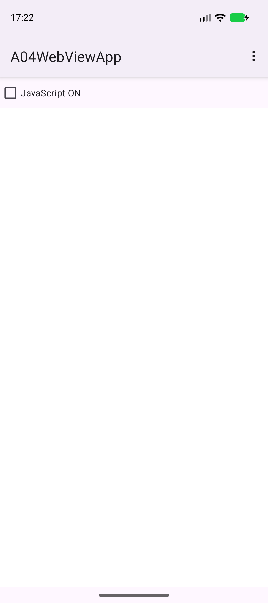
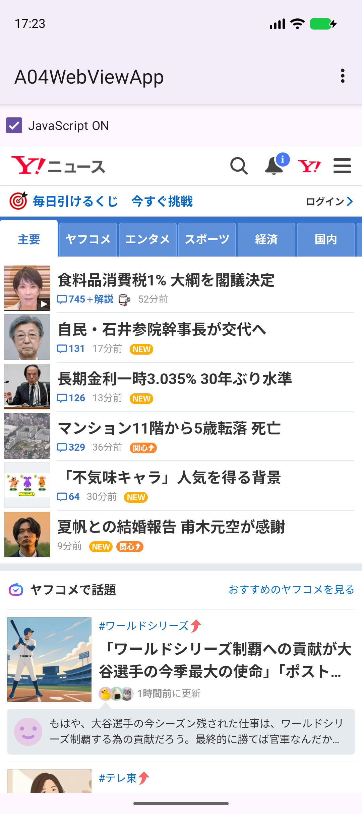
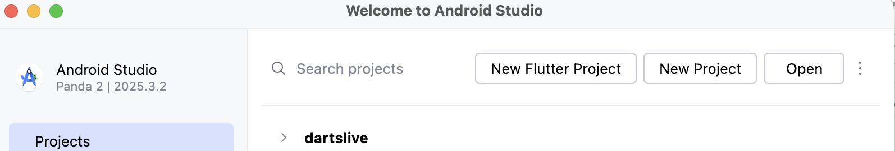
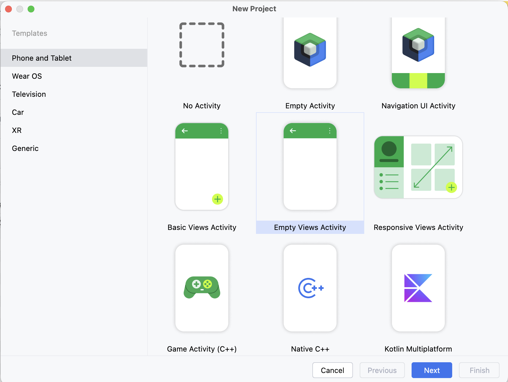
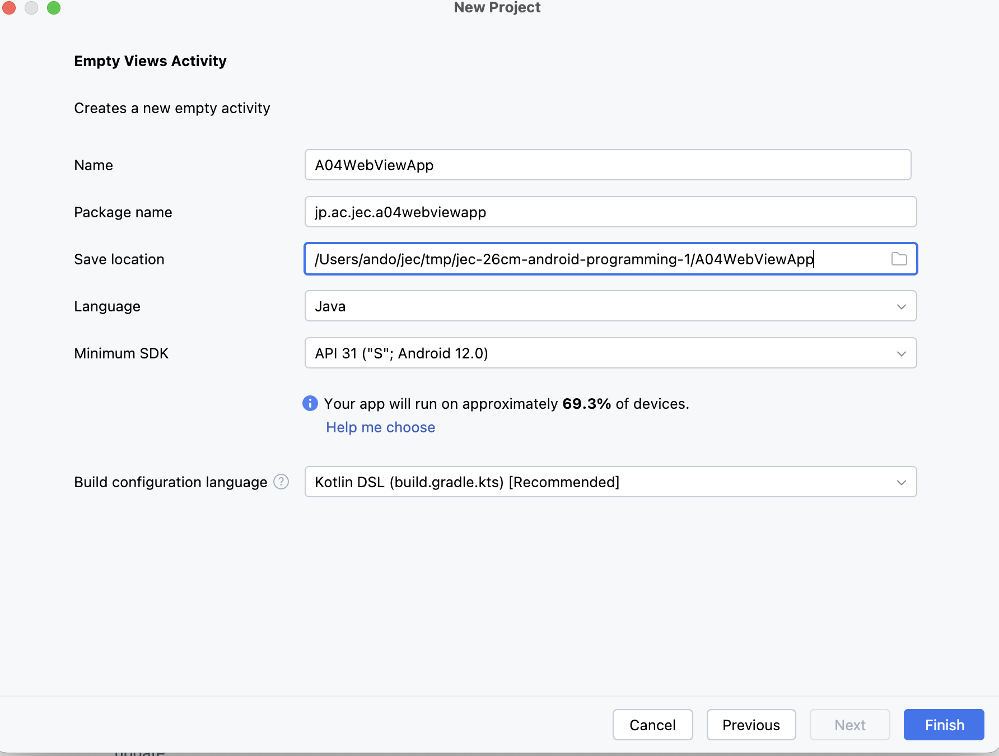
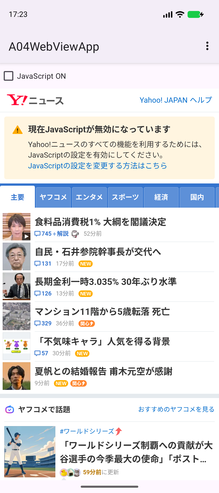
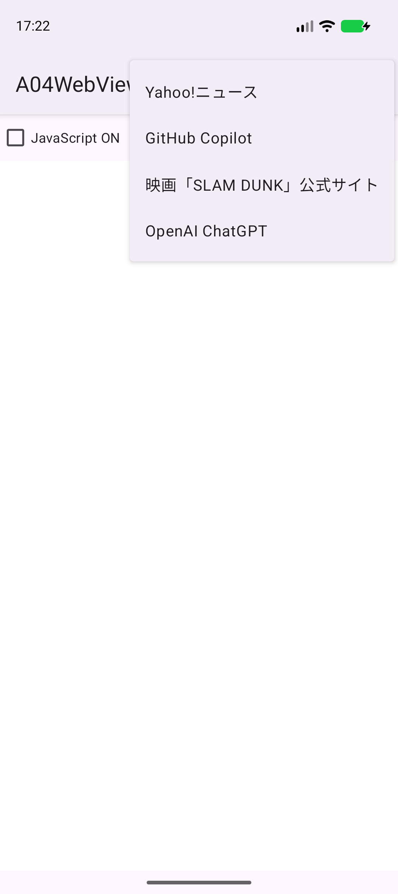
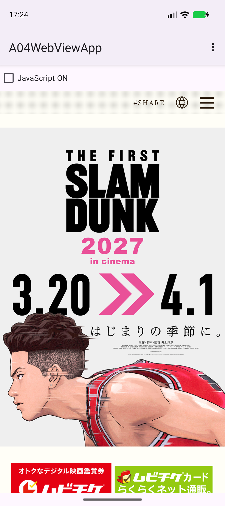

WEBVIEW APP
アプリの中で
Webページを表示しよう
ページを開く。メニューで切り替える。前のページに戻る。
WebViewを使って、小さなブラウザアプリへ。
今日のゴール
これまでの単元では、ボタンや画像など、アプリの中に用意した部品を表示しました。今回は WebView（ウェブビュー） を使い、インターネットのWebページをアプリの中に表示するアプリを作ります。右上のメニューでサイトを切り替え、チェックボックスでJavaScriptのON/OFFを切り替えます。
{kind=link}

{kind=link}

できるようになること
- インターネットの許可を追加し、WebViewでWebページを表示する。
- enumでメニューの項目をまとめ、オプションメニューからページを切り替える。
- JavaScriptのON/OFFを切り替え、Android 16以降でも動く方法で、戻る操作を前のページへの移動にする。
90分×2コマで進めます
| 授業 | 範囲 | 終了時にできること |
|---|---|---|
| 1コマ目 | STEP 0〜5 | アプリの設定と画面を作り、WebViewでページを表示し、メニューの項目を用意する。 |
| 2コマ目 | STEP 6〜10 | メニュー・JavaScript・戻る操作を追加し、ミニ練習・動作確認・提出を行う。 |
各コマに再実行と個別確認の時間を含みます。予習は不要です。
毎回、自分で新規作成します
作る場所は Documents/Android1/A04WebViewApp です。完成プロジェクトは初回から開けます。自分のコードを比べるときに使いましょう。
インターネット接続が必要です
このアプリは、実行中にインターネットのページを読み込みます。Macがネットにつながっていることを確認します。ニュースの見出しなどのページの内容は、画像と違って構いません。サイト側の更新で、見た目が変わることもあります。
完成アプリの操作
| 操作 | 結果 |
|---|---|
| 起動直後 | ActionBarに「A04WebViewApp」と ⋮。「JavaScript ON」はチェックなし。下は白い画面。 |
| ⋮ → サイト名 | そのサイトをアプリの中に表示する。 |
| ページ内のリンク | Chromeは開かず、アプリの中で移動する。 |
| 「JavaScript ON」を切り替える | JavaScriptの有効・無効を変えて、今のページを読み込み直す。 |
| 戻る操作 | 前のページがあれば戻る。なければホーム画面に戻る。 |
画面回転について
各単元では画面回転時のデータ保持を扱いません。回転などでActivityが作り直されると、表示中のページと戻るための履歴は初期状態に戻ります。縦向きで使います。この観点は別単元の演習アプリで検証します。
ここで止まって、確認
できたらチェックします。困ったときはSTEP番号と画面を先生に見せましょう。
プロジェクトを作って実行
授業環境はMacと Android Studio Panda 2 | 2025.3.2 です。これまでの単元とは別のプロジェクトを作ります。
- Android Studioの New Project をクリックします。別のプロジェクトを開いているときは File → New → New Project を選びます。
{kind=link}

- Phone and Tablet → Empty Views Activity → Next の順に選びます。名前に Views があることを確認します。
{kind=link}

| 項目 | 入力・選択する内容 |
|---|---|
| Name | A04WebViewApp |
| Package name | jp.ac.jec.a04webviewapp（すべて小文字） |
| Save location | /Users/ユーザ名/Documents/Android1/A04WebViewApp |
| Language | Java |
| Minimum SDK | API 31（Android 12.0） |
| Build configuration language | Kotlin DSL（build.gradle.kts） |
{kind=link}

- Finderの 移動 → ホーム で自分のユーザ名を確認します。書類（Documents）に
Android1フォルダがなければ作ります。 - 表の値と保存先を確認し、Finish をクリックします。
ユーザ名は自分の名前に置き換えます。 - Gradle Sync が完了するまで待ちます。
- 共通資料：Auto ImportのJava設定を確認します。
この単元で使う場所
| 役割 | Project表示で開く場所 |
|---|---|
| 見た目の設定（テーマ） | app/src/main/res/values/themes.xml と app/src/main/res/values-night/themes.xml |
| アプリの設定（許可） | app/src/main/AndroidManifest.xml |
| 画面（XML） | app/src/main/res/layout/activity_main.xml |
| 動き（Java） | app/src/main/java/jp/ac/jec/a04webviewapp/MainActivity.java |
| メニューの項目（Java） | app/src/main/java/jp/ac/jec/a04webviewapp/AppMenuItem.java（STEP 5で作る） |
左の一覧が見えないときは View → Tool Windows → Project を開きます。一覧の上の表示名が Project になっていることを確認します。パッケージのフォルダが jp.ac.jec.a04webviewapp とまとめて表示される場合もあります。
変更前に1回Runする
- 共通資料：エミュレータに従って端末を起動します。
- 上部で app と jec_26cm_android1_Pixel 9a を選び、Run ▶ を押します。
- Hello World! が表示されれば成功です。
MainActivity.ktができたとき
先生に画面を見せ、Empty Views Activity / Javaの選択を確認します。
ここで止まって、確認
できたらチェックします。困ったときはSTEP番号と画面を先生に見せましょう。
ActionBarとインターネットの許可
変更するファイル：res/values/themes.xml、res/values-night/themes.xml、AndroidManifest.xml
Javaを書く前に、アプリの設定を2つ変えます。
| 変更 | 理由 |
|---|---|
テーマから NoActionBar を外す | 画面上部に ActionBar（アクションバー） を表示する。STEP 6で作るメニュー（⋮）はActionBarに出る。 |
| インターネットの許可を追加する | アプリがインターネットに接続できるようにする。WebViewでページを読み込むために必要。 |
① テーマのNoActionBarを外す（2つのファイル）
Project表示で app/src/main/res/values/themes.xml を開きます。parent の値の末尾にある .NoActionBar だけを消します。ほかの文字は変えません。
<resources xmlns:tools="http://schemas.android.com/tools">
<!-- Base application theme. -->
<style name="Base.Theme.A04WebViewApp" parent="Theme.Material3.DayNight">
<!-- Customize your light theme here. -->
<!-- <item name="colorPrimary">@color/my_light_primary</item> -->
</style>
<style name="Theme.A04WebViewApp" parent="Base.Theme.A04WebViewApp" />
</resources>次に app/src/main/res/values-night/themes.xml も開き、同じように .NoActionBar を消します。テーマの設定は2つのファイルにあるので、両方とも変更します。
values-night/themes.xmlの変更後の全体で照合する
<resources xmlns:tools="http://schemas.android.com/tools">
<!-- Base application theme. -->
<style name="Base.Theme.A04WebViewApp" parent="Theme.Material3.DayNight">
<!-- Customize your dark theme here. -->
<!-- <item name="colorPrimary">@color/my_dark_primary</item> -->
</style>
</resources>Base.Theme.A04WebViewApp の部分はプロジェクト名から作られます。ファイル全体を貼り付けるのではなく、.NoActionBar を消す方法で変更しましょう。
② インターネットの許可を追加する
app/src/main/AndroidManifest.xml を開きます。<manifest の開始タグ（xmlns:tools=...> で終わる部分）の下、<application の上に1行追加します。
<uses-permission android:name="android.permission.INTERNET" />| コード | 意味 |
|---|---|
| AndroidManifest.xml | アプリの名前・アイコン・画面・必要な機能などを、Androidに伝える設定ファイル。 |
| uses-permission | アプリが使う機能（権限）を宣言する。 |
| android.permission.INTERNET | インターネットへの接続。インストール時に自動で許可され、確認の画面は出ない。 |
変更後のAndroidManifest.xml全体で照合する
<?xml version="1.0" encoding="utf-8"?>
<manifest xmlns:android="http://schemas.android.com/apk/res/android"
xmlns:tools="http://schemas.android.com/tools">
<uses-permission android:name="android.permission.INTERNET" />
<application
android:allowBackup="true"
android:dataExtractionRules="@xml/data_extraction_rules"
android:fullBackupContent="@xml/backup_rules"
android:icon="@mipmap/ic_launcher"
android:label="@string/app_name"
android:roundIcon="@mipmap/ic_launcher_round"
android:supportsRtl="true"
android:theme="@style/Theme.A04WebViewApp">
<activity
android:name=".MainActivity"
android:exported="true">
<intent-filter>
<action android:name="android.intent.action.MAIN" />
<category android:name="android.intent.category.LAUNCHER" />
</intent-filter>
</activity>
</application>
</manifest>Runで確かめる
画面上部に「A04WebViewApp」と書かれたActionBarが表示されます。Hello World!はまだ残っています。インターネットの許可の効果は、STEP 4でページを表示するときに確かめます。
ActionBarが出ないとき
2つのthemes.xmlの両方で .NoActionBar を消したか、保存したかを確認します。Theme.Material3.DayNight の後ろに . だけが残っていないかも見ます。
ここで止まって、確認
できたらチェックします。困ったときはSTEP番号と画面を先生に見せましょう。
CheckBoxとWebViewを置く
変更するファイル：app/src/main/res/layout/activity_main.xml
画面は、上にチェックボックス、その下にWebViewを置くだけです。Code 表示に切り替え、XMLの中で ⌘ A → 貼り付けを行い、ファイル全体を置き換えます。
<?xml version="1.0" encoding="utf-8"?>
<LinearLayout xmlns:android="http://schemas.android.com/apk/res/android"
xmlns:tools="http://schemas.android.com/tools"
android:id="@+id/main"
android:layout_width="match_parent"
android:layout_height="match_parent"
android:orientation="vertical"
tools:context=".MainActivity">
<CheckBox
android:id="@+id/checkBox"
android:layout_width="wrap_content"
android:layout_height="wrap_content"
android:text="JavaScript ON" />
<WebView
android:id="@+id/webView"
android:layout_width="match_parent"
android:layout_height="match_parent" />
</LinearLayout>| 新しい部品・指定 | 意味 |
|---|---|
| CheckBox（チェックボックス） | チェックのあり・なしを切り替える部品。STEP 7でJavaScriptの設定に使う。 |
| WebView（ウェブビュー） | Webページを表示する部品。アプリの中に小さなブラウザを置くイメージ。 |
| orientation="vertical" | 中の部品を、上からCheckBox → WebViewの順に縦に並べる。 |
| WebViewの layout_height="match_parent" | CheckBoxの下の、残りの高さいっぱいに広げる。 |
android:id="@+id/main" はJavaのひな形でも使うため残します。checkBox と webView は、次にJavaから探すための名前です。大文字・小文字も区別します。
文字を直接書いたことによる Hardcoded text の警告は、これまでの単元と同様にそのまま進めます。
Runで確かめる
ActionBarの下に「JavaScript ON」のチェックボックスが表示され、その下は白い画面です。チェックは付けたり外したりできますが、まだ何も起きません。
ここで止まって、確認
できたらチェックします。困ったときはSTEP番号と画面を先生に見せましょう。
WebViewでページを表示
変更するファイル：MainActivity.java
まず、決まったURLのページを1つ表示して、WebViewとインターネットの許可が動くことを確かめます。
① フィールドを追加する
public class MainActivity extends AppCompatActivity { のすぐ下の空行に追加します。@Override より上です。
private WebView webView;importは android.webkit.WebView です。webView は、STEP 6で作るメニューのメソッドからも使うため、onCreateの外のフィールドにします。
② onCreateの中でページを読み込む
onCreate の中で、ひな形の return insets; に続く }); の下、onCreate を閉じる } より上に追加します。
webView = findViewById(R.id.webView);
webView.setWebViewClient(new WebViewClient());
webView.loadUrl("https://news.yahoo.co.jp/"); // 表示の確認用。STEP 6で削除するimportは android.webkit.WebViewClient です。
| コード | 意味 |
|---|---|
| webView = findViewById(R.id.webView); | XMLのWebViewを取得し、フィールドに入れる。フィールドの型がWebViewなので、varやキャストは書かない。 |
| setWebViewClient(new WebViewClient()) | ページ内のリンクを、Chromeなど別のアプリではなく、このWebViewの中で開くようにする。 |
| loadUrl("https://...") | 指定したURLのページを読み込んで表示する。 |
loadUrlの行は確認用です
行の後ろのコメントのとおり、この1行は表示を確かめるための仮の行です。STEP 6でメニューから開く形に変えるときに削除します。
Runで確かめる
起動するとYahoo!ニュースが表示されます。上部に「現在JavaScriptが無効になっています」と出るのは、WebViewの初期設定でJavaScriptが無効だからです。STEP 7で切り替えられるようにします。
{kind=link}

「ウェブページへのアクセス不可」と出たとき
net::ERR_CACHE_MISS と表示される場合は、STEP 2のINTERNETの許可の行がないか、つづりが違うか、保存されていません。AndroidManifest.xml を確認して保存し、もう一度Runします。別のエラー名のときは、Macがインターネットにつながっているかを確認します。
許可の行を <application> の中に書いた場合は、ページの表示までは進まず、ビルドの時点で unexpected element <uses-permission> found in <manifest><application> というエラーになります。行を <application の上に移動します。
ここで止まって、確認
できたらチェックします。困ったときはSTEP番号と画面を先生に見せましょう。
メニューの項目をenumで作る
新しく作るファイル：app/src/main/java/jp/ac/jec/a04webviewapp/AppMenuItem.java
メニューに出す4つのサイトを用意します。1つのサイトには「URL」と「メニューに表示する名前」の2つの情報があります。これを enum（イーナム、列挙型） でまとめます。
① ファイルを作る
- Project表示で
app/src/main/java/jp/ac/jec/a04webviewapp（MainActivityがある場所）を右クリックします。 - New → Java Class を選びます。
- 名前の欄に
AppMenuItemと入力し、下の一覧から Enum を選んで Enter を押します。 AppMenuItem.javaが開きます。
作る場所に注意
app/src/test や app/src/androidTest の中にも同じ名前のパッケージがあります。必ず app/src/main/java の中の、MainActivity と同じ場所に作ります。
② 中身を置き換える
開いた AppMenuItem.java の中で ⌘ A → 貼り付けを行い、ファイル全体を置き換えます。
package jp.ac.jec.a04webviewapp;
/**
* MenuやMenuItemだと、android.view.Menuやandroid.view.MenuItemと被るためAppMenuItemとして定義した
*/
enum AppMenuItem {
YAHOO("https://news.yahoo.co.jp/", "Yahoo!ニュース"),
GITHUB_COPILOT("https://github.com/features/copilot/", "GitHub Copilot"),
SLAM_DUNK_MOVIE("https://slamdunk-movie.jp/", "映画「SLAM DUNK」公式サイト"),
CHAT_GPT("https://openai.com/ja-JP/chatgpt/overview/", "OpenAI ChatGPT");
private final String url;
private final String title;
AppMenuItem(String url, String title) {
this.url = url;
this.title = title;
}
String getUrl() {
return url;
}
String getTitle() {
return title;
}
}| コード | 意味 |
|---|---|
| enum AppMenuItem | 決まった種類だけを並べる型。今回はメニューの4項目。 |
| YAHOO(...)、GITHUB_COPILOT(...) など | enumの値。値ごとに、URLと表示する名前を持つ。 |
| private final String url; | 値ごとに覚えておくURL。final は、一度入れたら変えないという指定。 |
| AppMenuItem(String url, String title) | コンストラクタ。値を作るときに ( ) の中のURLと名前を受け取り、フィールドに入れる。 |
| this.url = url; | 左の this.url はフィールド、右の url は受け取った値。 |
| getUrl() / getTitle() | 覚えたURL・名前を、MainActivityから読むためのメソッド。 |
値と値の間は ,（カンマ）で区切り、最後の CHAT_GPT(...) の後ろだけ ;（セミコロン）にします。コメントにあるとおり、Menu や MenuItem という名前はAndroidのクラスと重なるため、AppMenuItem という名前にしています。
値の番号（ordinal）
enumの値には、書いた順に0から番号が付きます。この番号は ordinal() で取り出せます。AppMenuItem.values() は、4つの値を書いた順に入れた配列を返します。どちらもSTEP 6で使います。
| 値 | ordinal() | getTitle() |
|---|---|---|
| YAHOO | 0 | Yahoo!ニュース |
| GITHUB_COPILOT | 1 | GitHub Copilot |
| SLAM_DUNK_MOVIE | 2 | 映画「SLAM DUNK」公式サイト |
| CHAT_GPT | 3 | OpenAI ChatGPT |
Runで確かめる
まだどこからも使っていないので、画面は変わりません。エラーなくRunでき、STEP 4と同じくYahoo!ニュースが表示されれば成功です。
解説：enumを使わないと、何に困る？
A03のじゃんけんで手を番号（0:グー 1:チョキ 2:パー）で表したように、enumを使わず、番号と配列でメニューを作ることもできます。
次のコードは、MainActivityに書いた場合の比べるための例で、入力しません。AppMenuItemの url・title とは別のものです。文字列（String）の配列2つに、URLと表示名を分けて入れます。
private String[] urls = new String[]{
"https://news.yahoo.co.jp/",
"https://github.com/features/copilot/",
"https://slamdunk-movie.jp/",
"https://openai.com/ja-JP/chatgpt/overview/"
};
private String[] titles = new String[]{
"Yahoo!ニュース",
"GitHub Copilot",
"映画「SLAM DUNK」公式サイト",
"OpenAI ChatGPT"
};⋮ のメニューには、titles を上から順に並べます。押したときは、上から何番目か（0から数える）を調べ、同じ番号の urls[番号] を開きます。2つの配列は、番号だけでつながっています。
| 困る場面 | 起きること |
|---|---|
サイトを増やすとき、titles には先頭、urls には最後に足した | 1つずれたサイトが開く。例えば「日本電子専門学校」を押すと、Yahoo!ニュースが開く。赤いエラーは出ない。 |
titles には足したが、urls に足し忘れた | 5つ目を押すと、urls[4] がないので実行中にエラー（ArrayIndexOutOfBoundsException）になり、アプリが閉じる。押すまで気付けない。 |
enumを使うメリット
enum（列挙型）は、選べる値を決めて、1つずつ名前を付けた型です。自動販売機のボタンのように、決めた値の中からしか選べません。
| メリット | 配列を2つ使うと | enum（AppMenuItem）なら |
|---|---|---|
| ① 打ち間違いに気付ける | urls[7] のように、ない番号を書いても赤いエラーにならない。 | AppMenuItem. まで入力すると候補が出る。AppMenuItem.YAHO のような打ち間違いは、Runの前に赤いエラーになる。 |
| ② 情報が1か所にまとまる | 別々の配列に足すので、位置がずれることがある（上の表）。 | YAHOO(...) の1行に、URLと表示名を並べて書くので、組がずれない。 |
| ③ 追加がenumだけで済む | 2つの配列の、同じ番号の位置に1つずつ足す。 | values() で全部の値を順に取り出すので、enumに値を1行足すだけ（前の行の ; は , に変える）。MainActivityは変えない（STEP 9 練習1）。 |
| ④ 名前で意味が読める | urls[2] が何のサイトか、数えないと分からない。 | AppMenuItem.SLAM_DUNK_MOVIE と書けば、どのサイトか読める。 |
ただし、URLの文字の打ち間違いは、enumでもエラーになりません。直すのは AppMenuItem.java の1か所です。
enumの値の使い方
enumの値は 型の名前.値の名前 で書きます。.（ドット）は「〜の」と読みます。例えば AppMenuItem.YAHOO.getUrl() は、「AppMenuItemのYAHOOの、URLを取り出す」という意味です。
ほかの書き方と結果を表で確かめる
| 書き方 | 意味 | 結果 |
|---|---|---|
| AppMenuItem.YAHOO | 4つの値から、YAHOOを選ぶ。 | YAHOO（Yahoo!ニュースのURLと表示名を持つ値） |
| AppMenuItem.YAHOO.getUrl() | YAHOOの、URLを取り出す。 | "https://news.yahoo.co.jp/" |
| AppMenuItem.SLAM_DUNK_MOVIE.ordinal() | SLAM_DUNK_MOVIEの、番号を取り出す（上の「値の番号」の表）。 | 2 |
| AppMenuItem.values()[2] | 値を書いた順に入れた配列から、2番を取り出す。 | SLAM_DUNK_MOVIE |
STEP 6の menuItem.getTitle() のように、値を入れた変数からもメソッドを呼べます。
enumでも番号を使う場面
STEP 6では、押した項目の番号を使い、values()[番号] で値を取り出します。この番号は自分で書きません。メニューを作るときも押したときも、enumが値を書いた順に付けた同じ番号（「値の番号」の表）を使うので、項目を増やしてもずれません。ただし values()[7] のように、ない番号を自分で書くと、enumでも実行中のエラーになります。
1コマ目はここまで
保存してからもう一度Runします。隣の人か先生に、enumの4つの値と番号（ordinal）の対応と、enumを使うメリットを1つ説明しましょう。次回も自分の Documents/Android1/A04WebViewApp を開きます。
ここで止まって、確認
できたらチェックします。困ったときはSTEP番号と画面を先生に見せましょう。
メニューでページを切り替える
変更するファイル：MainActivity.java
前回の画面をRunして確認してから始めます。ActionBarの右上の ⋮（オプションメニュー）に、STEP 5の4つのサイトを出します。
① 確認用の1行を削除する
onCreate の中の、次の1行を削除します。すぐ上の setWebViewClient の行は残します。
② メニューのメソッドを2つ追加する
ファイルの末尾にある2つの } を見つけます。上は onCreate、下は MainActivity を閉じています。その2つの間に追加します。
@Override
public boolean onCreateOptionsMenu(Menu menu) {
for (var menuItem : AppMenuItem.values()) {
menu.add(Menu.NONE, menuItem.ordinal(), Menu.NONE, menuItem.getTitle());
}
return true; // trueを指定し、メニューを表示する
}
@Override
public boolean onOptionsItemSelected(@NonNull MenuItem item) {
var appMenuItem = AppMenuItem.values()[item.getItemId()];
webView.loadUrl(appMenuItem.getUrl());
return true; // trueを指定し、イベントを消費して処理を終了する
}importは android.view.Menu、android.view.MenuItem、androidx.annotation.NonNull です。MenuItem の候補が複数出たときは android.view.MenuItem を選びます。
| メソッド | 呼ばれるとき | していること |
|---|---|---|
| onCreateOptionsMenu | メニューを用意するとき | enumの値を順に取り出し、メニューに1項目ずつ追加する。true を返すとメニューが表示される。 |
| onOptionsItemSelected | メニューの項目を押したとき | 押した項目のidからenumの値を取り出し、そのURLを読み込む。true は「この処理で終わり」という意味。 |
| menu.add( ) の引数 | 意味 |
|---|---|
| 1つ目 Menu.NONE | グループ。今回は使わない。 |
| 2つ目 menuItem.ordinal() | 項目のid。押したときに、どの項目かを見分ける番号（0〜3）。 |
| 3つ目 Menu.NONE | 並び順の指定。今回は使わず、追加した順に並ぶ。 |
| 4つ目 menuItem.getTitle() | メニューに表示する文字。 |
values()・ordinal()・getUrl() の読み方は、STEP 5の「enumの値の使い方」で確かめられます。
@Override は、親クラス（AppCompatActivity）のメソッドを上書きする印です。名前を打ち間違えると赤いエラーで気付けます。@NonNull は「item にnullは来ない」ことを示す印です。
Runで確かめる
- 起動直後は白い画面です（確認用のloadUrlを削除したため）。
- 右上の ⋮ を押すと、4つのサイト名が表示されます。
- 「映画「SLAM DUNK」公式サイト」を押すと、そのページが表示されます。ほかの項目も試します。
{kind=link}

{kind=link}

⋮ が表示されないとき
STEP 2で2つのthemes.xmlから .NoActionBar を消したかを確認します。ActionBarがないと、オプションメニューも表示されません。
ここで止まって、確認
できたらチェックします。困ったときはSTEP番号と画面を先生に見せましょう。
JavaScriptのON/OFFとズーム
変更するファイル：MainActivity.java
JavaScript は、Webページの中で動くプログラミング言語です。多くのサイトは、メニューの開閉や表示の切り替えなどにJavaScriptを使います。WebViewは初期設定でJavaScriptが無効なので、チェックボックスで切り替えられるようにします。
① CheckBoxを取得する
onCreate の webView = findViewById(R.id.webView); のすぐ下に追加します。
var checkBox = (CheckBox) findViewById(R.id.checkBox);importは android.widget.CheckBox です。(CheckBox) は、チェックの状態を読むためにCheckBoxとして扱う指定です。
② 起動時の設定をそろえる
webView.setWebViewClient(new WebViewClient()); のすぐ下に追加します。
webView.getSettings().setJavaScriptEnabled(checkBox.isChecked());③ チェックを切り替えたときの処理とズーム
onCreate の最後、onCreate を閉じる } の直前に追加します。
checkBox.setOnCheckedChangeListener((buttonView, isChecked) -> {
webView.getSettings().setJavaScriptEnabled(isChecked);
webView.reload();
});
webView.getSettings().setBuiltInZoomControls(true);| コード | 意味 |
|---|---|
| webView.getSettings() | WebViewの設定を取り出す。 |
| setJavaScriptEnabled(checkBox.isChecked()) | 起動時のチェックの状態に合わせる。最初はチェックなしなので無効。 |
| setOnCheckedChangeListener((buttonView, isChecked) -> { ... }) | チェックが切り替わったときの処理。isChecked は切り替えた後の状態（true：チェックあり）。buttonView は押されたCheckBoxで、今回は使わない。 |
| webView.reload() | 今のページを読み込み直し、変えた設定をページに反映する。 |
| setBuiltInZoomControls(true) | 2本指で広げる・つまむ操作（ピンチ）で、ページを拡大・縮小できるようにする。 |
Runで確かめる
- ⋮ → Yahoo!ニュースを開きます。チェックなしでは「現在JavaScriptが無効になっています」が出ます。
- 「JavaScript ON」にチェックを付けます。ページが読み込み直され、案内が消えます。
- チェックを外すと、もう一度読み込み直され、案内が出ます。
「Cookie」の確認画面が出たとき
JavaScriptを有効にすると、サイトによっては、Cookie（クッキー）の使い方を確認する画面がページの上に表示されます。映画「SLAM DUNK」公式サイトなどで表示されます。授業での確認では「拒否」を押して閉じて構いません。
余裕があれば、ページを拡大してみます。エミュレータでは ⌘ を押しながら画面をドラッグすると、2本指の操作になります。サイト側で拡大を制限している場合は、拡大できないこともあります。
JavaScriptを有効にするときの注意
JavaScriptを有効にすると、表示したページのプログラムがアプリの中で動きます。どんなURLでも開けるアプリでは、有効にするかを慎重に決めるのが基本です。今回のアプリはメニューにある決まったサイトを開きますが、ページ内のリンクをたどると、ほかのサイトもJavaScriptが有効なままアプリの中で開きます。
仕様の確認：WebSettings（Android公式）。
ここで止まって、確認
できたらチェックします。困ったときはSTEP番号と画面を先生に見せましょう。
戻る操作で前のページへ
変更するファイル：MainActivity.java
リンクで別のページに移動したあと、戻る操作をしたら前のページに戻るようにします。戻る操作とは、画面の左端（または右端）から内側へのスワイプや、エミュレータのツールバーの戻るボタン（◁）のことです。
まず、今の動きを確かめる
- Runして、⋮ → Yahoo!ニュースを開き、記事のリンクを1つ押します。
- 戻る操作をします。前のページがあるのに、ホーム画面に戻ってしまいます。
① 戻る処理を登録する
onCreate の webView.setWebViewClient(new WebViewClient()); の行の上に追加します。var checkBox = ...; より下です。
// 戻る操作で前のページに戻る処理。前のページがあるときだけ有効にする
// Android 16以降（targetSdk 36以上）はonKeyDownで戻るキーを受け取れないため、OnBackPressedCallbackを使う
var backCallback = new OnBackPressedCallback(false) {
@Override
public void handleOnBackPressed() {
webView.goBack();
}
};
getOnBackPressedDispatcher().addCallback(this, backCallback);importは androidx.activity.OnBackPressedCallback です。
② WebViewClientを置き換える
webView.setWebViewClient(new WebViewClient()); の1行を、次のコードに置き換えます。すぐ下の setJavaScriptEnabled の行は残します。
webView.setWebViewClient(new WebViewClient() {
// ページの履歴が変わるたびに呼ばれる
@Override
public void doUpdateVisitedHistory(WebView view, String url, boolean isReload) {
backCallback.setEnabled(view.canGoBack());
}
});しくみ
| コード | 意味 |
|---|---|
| new OnBackPressedCallback(false) { ... } | 戻る操作のときに行う処理。(false) は「最初は無効」という意味。 |
| handleOnBackPressed() | 有効なときに戻る操作をすると呼ばれる。webView.goBack() で前のページに戻る。 |
| getOnBackPressedDispatcher().addCallback(this, backCallback) | この画面（Activity）に、戻る処理を登録する。 |
| new WebViewClient() { ... } | STEP 4のWebViewClientに、履歴が変わったときの処理を足したもの。リンクをWebViewの中で開く働きはそのまま。 |
| doUpdateVisitedHistory(...) | ページを開いた・戻ったなど、閲覧の履歴が変わるたびに呼ばれる。 |
| backCallback.setEnabled(view.canGoBack()) | 前のページがあれば（canGoBack() がtrue）戻る処理を有効に、なければ無効にする。 |
| 状態 | backCallback | 戻る操作の結果 |
|---|---|---|
| 起動直後・最初のページだけ | 無効 | Androidの通常の戻る操作になり、ホーム画面に戻る。 |
| リンクやメニューで次のページを開いた後 | 有効 | handleOnBackPressed が呼ばれ、前のページに戻る。 |
| 最初のページまで戻った後 | 無効（戻ったときに更新） | 次の戻る操作でホーム画面に戻る。 |
new クラス名() { ... } の書き方
これまでの v -> { ... }（ラムダ式）は、書く処理が1つだけの型に使える省略形です。OnBackPressedCallback と WebViewClient はクラスなので、new クラス名() { ... } の形で、その場で中身を書き換えます。@Override の付いたメソッドが、書き換えた部分です。
Runで確かめる
- ⋮ → Yahoo!ニュースを開き、記事のリンクを押します。
- 戻る操作をします。Yahoo!ニュースのトップに戻ります。
- もう一度戻る操作をします。前のページがないので、ホーム画面に戻ります。
- もう一度起動し、⋮ で2つのサイトを続けて開いてから戻る操作をします。1つ前のサイトに戻ります。
解説：Android 16から「戻る」の受け取り方が変わった
インターネットの記事や以前の教材では、WebViewで前のページに戻る処理を、次のように onKeyDown で書く例がよく見られます。Android公式のWebViewの資料にも、この書き方が載っています。
@Override
public boolean onKeyDown(int keyCode, KeyEvent event) {
if (keyCode == KeyEvent.KEYCODE_BACK && webView.canGoBack()) {
webView.goBack();
return true;
}
return super.onKeyDown(keyCode, event);
}この書き方は、targetSdkが36（Android 16）以上のアプリを、Android 16以降の端末で動かすと働きません。戻る操作をしても onKeyDown に KeyEvent.KEYCODE_BACK が届かず、onBackPressed も呼ばれません。そのため、前のページがあってもホーム画面に戻ります。
| アプリのtargetSdk | 端末のAndroid | onKeyDownでKEYCODE_BACKを受け取る | OnBackPressedCallback |
|---|---|---|---|
| 35以下 | どのバージョンでも | 受け取れる（※1） | 動く |
| 36以上 | Android 15以前 | 受け取れる（※1） | 動く |
| 36以上 | Android 16以降 | 受け取れない（※2） | 動く |
※1 AndroidManifest.xmlで予測型「戻る」を自分で有効にした（android:enableOnBackInvokedCallback="true"）アプリを除きます。
※2 下の「以前の動きに戻す設定」（android:enableOnBackInvokedCallback="false"）を書いたアプリを除きます。
授業のプロジェクトは app/build.gradle.kts で targetSdk = 36 です。教材撮影用の jec_26cm_android1_Pixel 9a はAndroid 17です。このため、onKeyDown の方法では前のページに戻れません。OnBackPressedCallback は、Android 15以前の端末でもそのまま動きます。
なぜ変わったのか：予測型「戻る」
Androidには、Android 13から 予測型「戻る」（Predictive Back） という仕組みが段階的に入っています。戻るジェスチャーを始めると、指を離す前に「戻った先」（ホーム画面や前の画面）をプレビューで見せる仕組みです。
プレビューを出すには、アプリが戻る操作を自分で処理するかどうかを、操作が始まる前にAndroidが知っている必要があります。onKeyDown は、戻る操作が起きてから「処理するか」をアプリが決める方法なので、先にプレビューを出せません。そこでAndroid 16からは、targetSdk 36以上のアプリに対してこの受け取り方をやめ、OnBackPressedCallback のように「戻る処理が今有効かどうか」を先に登録しておく方法を使うことになりました。
この単元で doUpdateVisitedHistory を使い、前のページがあるときだけ backCallback を有効にしたのはこのためです。前のページがないときに無効にしておくと、Androidは「ホーム画面に戻る」ことを前もって知り、プレビューを表示できます。
以前の動きに戻す設定もあるが、使わない
AndroidManifest.xmlの <application> や <activity> に android:enableOnBackInvokedCallback="false" を書くと、一時的に以前の動きに戻せます。公式資料でも「一時的な回避策」とされているため、この授業では使いません。ネットの記事を参考にするときは、記事の書かれた時期と、対象のAndroidバージョンを確認しましょう。
仕様の確認：Android 16の動作変更（Android公式）、予測型「戻る」ジェスチャーのサポート（Android公式）、OnBackPressedCallback（Android公式）。
ここで止まって、確認
できたらチェックします。困ったときはSTEP番号と画面を先生に見せましょう。
ミニ練習
まず戻る操作まで完成させます。そのあと、次の小変更を1つずつ試します。予想 → 変更 → Run → 説明 → 元に戻すの順で行います。
練習1：メニューにサイトを1つ増やす
AppMenuItem.java の CHAT_GPT(...) の行の最後の ; を , に変え、その下に JEC("https://www.jec.ac.jp/", "日本電子専門学校"); を追加します。MainActivityは変えません。メニューはどうなるでしょうか。
試したあとに答えを見る
⋮ の5つ目に「日本電子専門学校」が出て、押すと学校のサイトが表示されます。onCreateOptionsMenu は AppMenuItem.values() をfor文で回すため、enumの値を増やすだけで項目が増えます。idは ordinal() の4になり、values()[4] でJECを取り出せます。URLと表示名を同じ1行に書くので、配列を2つ使う書き方のように「2つの配列の、同じ番号の位置に1つずつ足す」必要もありません（enumを使うメリットの②③）。確認後は元に戻します。
練習2：WebViewClientを外すと？
webView.setWebViewClient(new WebViewClient() { から }); までの7行を選び、⌘ / でコメントにします。⋮ → Yahoo!ニュースを開き、記事のリンクを押すとどうなるか、予想してから試します。
試したあとに答えを見る
メニューから開いたページはアプリの中に表示されますが、ページ内のリンクを押すと Chrome が開きます。初めてChromeを開くときは、Chromeの初期設定の画面が出ることがあります。サイトによっては、メニューから開いた最初のページでもChromeが開きます。WebViewClientを設定すると、リンクをWebViewの中で開きます。また、戻る処理を有効にする doUpdateVisitedHistory も動かないため、戻る操作でホーム画面に戻ります。確認後は同じ7行を選んで ⌘ / を押し、コメントを外します。
練習3：以前の書き方（onKeyDown）を試す
STEP 8の解説にある onKeyDown のメソッドを、onCreateOptionsMenu の上（onCreateの外、MainActivityの中）に追加します。importは android.view.KeyEvent です。さらに、getOnBackPressedDispatcher().addCallback(this, backCallback); の行を ⌘ / でコメントにします。⋮ でYahoo!ニュースを開き、記事のリンクを押してから戻る操作をすると、どうなるでしょうか。
試したあとに答えを見る
前のページがあっても、ホーム画面に戻ります。targetSdk 36のアプリをAndroid 16以降のエミュレータで動かしているため、onKeyDown に KEYCODE_BACK が届きません。先生の指示でAndroid 15以前のエミュレータを使っている場合は、onKeyDown でも前のページに戻れます。結果が違う理由を、STEP 8の表で確かめましょう。確認後は onKeyDown のメソッドを削除し、addCallback の行のコメントを外します。使わなくなった KeyEvent のimportが残っていたら削除します。
完成版に戻してから確認
練習1のJECの行（CHAT_GPT(...) の最後は ; に戻す）、練習2のコメント、練習3の onKeyDown とコメントを元に戻します。メニューが4項目で、リンク先から戻る操作で前のページに戻ることをRunで確かめます。
ここで止まって、確認
できたらチェックします。困ったときはSTEP番号と画面を先生に見せましょう。
完成とふり返り
完成チェック
| 操作 | 確認する結果 |
|---|---|
| 起動直後 | ActionBarに「A04WebViewApp」と ⋮。「JavaScript ON」はチェックなし。下は白い画面。 |
| ⋮ を押す | Yahoo!ニュース、GitHub Copilot、映画「SLAM DUNK」公式サイト、OpenAI ChatGPTの4項目が出る。 |
| 各項目を押す | そのサイトがアプリの中に表示される。 |
| ページ内のリンクを押す | Chromeは開かず、アプリの中で移動する。 |
| 「JavaScript ON」を付ける・外す | ページが読み込み直される。Yahoo!ニュースでは、JavaScriptが無効という案内が消える・出る。 |
| リンク先で戻る操作 | 前のページに戻る。 |
| 最初のページで戻る操作 | ホーム画面に戻る。 |
自分の言葉でふり返る
- INTERNETの許可は、どのファイルに書きましたか。書かないとどうなりましたか。
- メニューの項目を増やすとき、変更するのはどのファイルですか。
- URLと表示名を2つの配列で持つ書き方と比べて、enumを使うと何がよいですか。1つ挙げましょう。
- JavaScriptの設定を変えたあと、
reload()を呼ぶのはなぜですか。 - Android 16以降で、
onKeyDownではなくOnBackPressedCallbackを使うのはなぜですか。
保存と提出
自分の Documents/Android1/A04WebViewApp を保存します。先生からAPK提出の指示がある場合は、共通資料：提出用APKの作り方に進みます。ファイル名は 学籍番号_A04WebViewApp.apk です。提出先は先生の案内に従います。
教材のチェックは自分用です。先生への送信はしません。印刷は ⌘ P で行えます。
ここで止まって、確認
できたらチェックします。困ったときはSTEP番号と画面を先生に見せましょう。
困ったとき
| 困ったこと | 最初に確認する場所 |
|---|---|
| ActionBarや ⋮ が出ない | STEP 2で、2つのthemes.xmlの両方から .NoActionBar を消したか。STEP 6の onCreateOptionsMenu がonCreateの外にあり、return true か。 |
| 「ウェブページへのアクセス不可」「net::ERR_CACHE_MISS」 | AndroidManifest.xmlのINTERNETの許可の行があるか、つづりが android.permission.INTERNET か。保存してRunし直す。 |
| ビルドで「unexpected element <uses-permission> found in <manifest><application>」 | 許可の行が <application> の中にある。<application の上に移動する。 |
| 「ウェブページへのアクセス不可」で別のエラー名 | Macがインターネットにつながっているか。URLのつづりを確認する。 |
| R.id.webView / R.id.checkBox が赤い | XMLのid。webView・checkBox の大文字・小文字まで一致するか。最初のXMLエラーを直してビルドする。 |
| AppMenuItem が赤い | STEP 5のファイル名が AppMenuItem.java か。app/src/main/java の、MainActivityと同じ場所に作ったか。 |
| Menu・MenuItemが赤い | android.view.Menu と android.view.MenuItem をimportする。⌥ Enter で候補を確認する。 |
| リンクを押すとChromeが開く | setWebViewClient の行があるか（STEP 4・STEP 8）。コメントにしたままになっていないか。 |
| JavaScriptの案内が消えない | STEP 7の③がonCreateの中にあるか。webView.reload() があるか。 |
| backCallback が赤い | STEP 8の①のコードが、②の setWebViewClient より上にあるか。 |
| 戻る操作でホーム画面に戻ってしまう | リンクなどで2ページ目を開いてから試しているか。addCallback の行と、doUpdateVisitedHistory の setEnabled を確認する。 |
| 起動時に終了する | setContentViewがfindViewByIdより先か、id/mainを残したかを確認。Logcatで最初の例外を見る。 |
| 起動すると白い画面のまま | STEP 6以降は、起動直後の白い画面が正常。⋮ からサイトを選ぶ。 |
| ページの表示が崩れる・一部が出ない | JavaScriptが必要なページのことがある。「JavaScript ON」にしてみる。サイト側の更新で見た目が変わることもある。 |
共通資料：Logcatを使います。今回のパッケージは jp.ac.jec.a04webviewapp です。エラーを見るときは package:jp.ac.jec.a04webviewapp level:ERROR にします。これまでの単元のパッケージ名や tag:MainActivity を残さないようにします。
質問では「STEP番号・編集したファイル・最初の赤い行・押した順番」を伝えます。
完成プロジェクトを開く
完成版は最初の授業から使える見本です。完成プロジェクト A04WebViewApp.zip
- ZIPを展開します。中に
A04WebViewAppフォルダができます。 - 見本は
/Users/ユーザ名/Documents/Android1/samples/A04WebViewAppに置きます。 - Android Studioの Open で、
settings.gradle.ktsとappが入ったA04WebViewAppフォルダを選びます。 - Sync後にRunして動きを確認します。授業の入力に戻るときは自分の
Documents/Android1/A04WebViewAppを開きます。
両方とも同じプロジェクト名なので、ウィンドウの保存先を確認しましょう。見本と自分のアプリは同じパッケージ名のため、端末上では同じアプリを更新します。切り替えるときは、確認したい方のプロジェクトからRunします。
完成したMainActivity.javaで照合する
package jp.ac.jec.a04webviewapp;
import android.os.Bundle;
import android.view.Menu;
import android.view.MenuItem;
import android.webkit.WebView;
import android.webkit.WebViewClient;
import android.widget.CheckBox;
import androidx.activity.EdgeToEdge;
import androidx.activity.OnBackPressedCallback;
import androidx.annotation.NonNull;
import androidx.appcompat.app.AppCompatActivity;
import androidx.core.graphics.Insets;
import androidx.core.view.ViewCompat;
import androidx.core.view.WindowInsetsCompat;
public class MainActivity extends AppCompatActivity {
private WebView webView;
@Override
protected void onCreate(Bundle savedInstanceState) {
super.onCreate(savedInstanceState);
EdgeToEdge.enable(this);
setContentView(R.layout.activity_main);
ViewCompat.setOnApplyWindowInsetsListener(findViewById(R.id.main), (v, insets) -> {
Insets systemBars = insets.getInsets(WindowInsetsCompat.Type.systemBars());
v.setPadding(systemBars.left, systemBars.top, systemBars.right, systemBars.bottom);
return insets;
});
webView = findViewById(R.id.webView);
var checkBox = (CheckBox) findViewById(R.id.checkBox);
// 戻る操作で前のページに戻る処理。前のページがあるときだけ有効にする
// Android 16以降（targetSdk 36以上）はonKeyDownで戻るキーを受け取れないため、OnBackPressedCallbackを使う
var backCallback = new OnBackPressedCallback(false) {
@Override
public void handleOnBackPressed() {
webView.goBack();
}
};
getOnBackPressedDispatcher().addCallback(this, backCallback);
webView.setWebViewClient(new WebViewClient() {
// ページの履歴が変わるたびに呼ばれる
@Override
public void doUpdateVisitedHistory(WebView view, String url, boolean isReload) {
backCallback.setEnabled(view.canGoBack());
}
});
webView.getSettings().setJavaScriptEnabled(checkBox.isChecked());
checkBox.setOnCheckedChangeListener((buttonView, isChecked) -> {
webView.getSettings().setJavaScriptEnabled(isChecked);
webView.reload();
});
webView.getSettings().setBuiltInZoomControls(true);
}
@Override
public boolean onCreateOptionsMenu(Menu menu) {
for (var menuItem : AppMenuItem.values()) {
menu.add(Menu.NONE, menuItem.ordinal(), Menu.NONE, menuItem.getTitle());
}
return true; // trueを指定し、メニューを表示する
}
@Override
public boolean onOptionsItemSelected(@NonNull MenuItem item) {
var appMenuItem = AppMenuItem.values()[item.getItemId()];
webView.loadUrl(appMenuItem.getUrl());
return true; // trueを指定し、イベントを消費して処理を終了する
}
}完成したAppMenuItem.javaで照合する
package jp.ac.jec.a04webviewapp;
/**
* MenuやMenuItemだと、android.view.Menuやandroid.view.MenuItemと被るためAppMenuItemとして定義した
*/
enum AppMenuItem {
YAHOO("https://news.yahoo.co.jp/", "Yahoo!ニュース"),
GITHUB_COPILOT("https://github.com/features/copilot/", "GitHub Copilot"),
SLAM_DUNK_MOVIE("https://slamdunk-movie.jp/", "映画「SLAM DUNK」公式サイト"),
CHAT_GPT("https://openai.com/ja-JP/chatgpt/overview/", "OpenAI ChatGPT");
private final String url;
private final String title;
AppMenuItem(String url, String title) {
this.url = url;
this.title = title;
}
String getUrl() {
return url;
}
String getTitle() {
return title;
}
}完成したactivity_main.xmlで照合する
<?xml version="1.0" encoding="utf-8"?>
<LinearLayout xmlns:android="http://schemas.android.com/apk/res/android"
xmlns:tools="http://schemas.android.com/tools"
android:id="@+id/main"
android:layout_width="match_parent"
android:layout_height="match_parent"
android:orientation="vertical"
tools:context=".MainActivity">
<CheckBox
android:id="@+id/checkBox"
android:layout_width="wrap_content"
android:layout_height="wrap_content"
android:text="JavaScript ON" />
<WebView
android:id="@+id/webView"
android:layout_width="match_parent"
android:layout_height="match_parent" />
</LinearLayout>